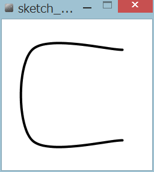

複雑な図形

左の図は、次のプログラムにより描いた曲線です。
size(250, 250); strokeWeight(4); background(255); beginShape(); curveVertex(200, 50); curveVertex(200, 50); curveVertex(50, 50); curveVertex(50, 200); curveVertex(200, 200); curveVertex(200, 200); endShape();
点を指定して直線を描く
■ beginShape() 図形の始まり■ endShape() 図形の終わり
■ vertex(x, y) 点の座標を指定
beginShape()とendShape()の間に、vertex()を使って点の座標を指定します。指定された点により、線や三角形、四角形、多角形などが描かれます。vertex()関数はbeginShape()とendShape()の間だけで有効です。
点を指定して曲線を描く
■ beginShape() 図形の始まり■ endShape() 図形の終わり
■ curveVertex(x, y) 点の座標を指定
beginShape()とendShape()の間に、vertex()を使って点の座標を指定します。指定された点により、曲線が描かれます。curveVertex()関数はbeginShape()とendShape()の間だけで有効です。
2点の間の曲線を描くのに最低4つの点の指定が必要です。最初と最後の点は、曲線の始点と終点を描くためのガイドとして使われます。上の例では、先頭2点の座標、末尾2点の座標は同じで6点を指定していました。結果4点をつないだ曲線が描かれています。